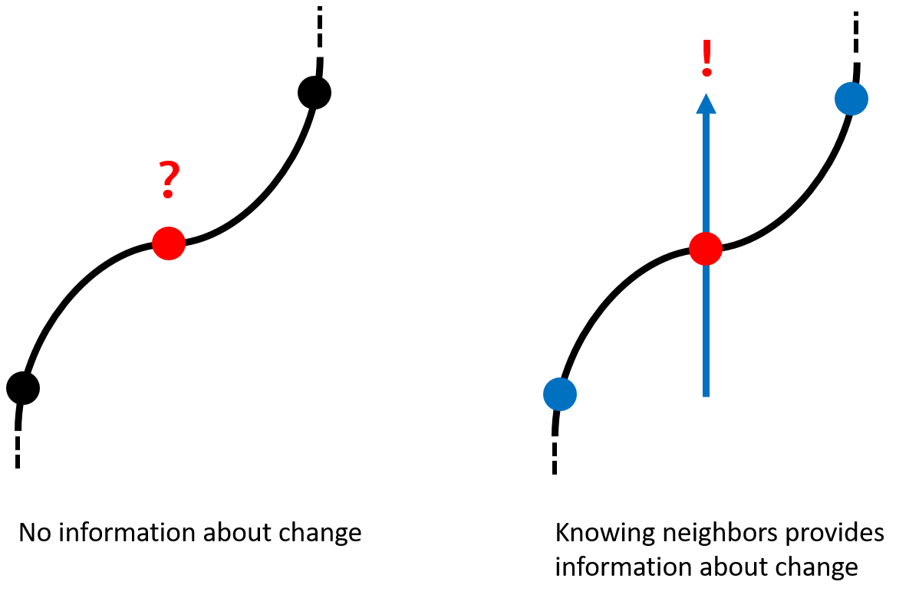

Edge Detection
For many of us, it is easy to find both the objects in a picture and their boundaries. Humans are very good at identifying what something is and where it is given a clear line of sight, but what if we need to find the boundaries of many objects in an enormously large number photos? This is too much work for one person. Why don't we just make a computer find the edges for us instead? In computer vision, this is a general problem known as edge detection.
Formally, edge detection is the process of detecting the boundaries in an image that separate great changes in brightness or intensity. One of the reasons for doing edge detection is that it is able to reduce a complex image down to a simpler one where only edges are marked. Because of this, edge detection often acts as a preliminary step to other computer vision processes.
Image Representation
Before jumping into edge detection, let's go over how computers represent images. Computers generally store images as grids of values or pixel arrays. A color image, for instance, is decomposable into three pixel arrays storing the RGB color channels. While RGB is convenient for representing color, edge detection is only interested in looking at intensity values. Fortunately for us, it is possible to directly compute intensity from RGB values, giving us a pixel array of grayscale intensities to start working with.
From RGB to Intensity
The conversion from RGB to intensity is a somewhat involved process that delves into color science and human perception. While RGB is a helpful model, in reality, humans do not perceive color linearly or equally among the three channels. To convert RGB to intensity, each RGB value must first be mapped into a linear color space. These values are then put through a weighted sum and converted back to our non-linear RGB color space for display.
Finding Edges
How do we begin searching for edges? We need some natural intuition for what an edge is. To aid us in this question, let us take a step back and re-imagine our problem. Suppose our pixel array is put into 3D space as a topological map where the intensity of each pixel becomes some height. Looking at the example below, it becomes clear that edges are analogous to sharp drops and inclines on this map.
How do we locate areas with these sharp changes in height? Let's pick some point on this map. Knowing our point’s height alone is relatively unhelpful since although it may tell us how high up it is, we get no information about how the height has changed around it. What if, in addition, we also considered the heights of points a small radius away from our chosen point? Ah-hah! Now by comparing these nearby heights, we can get some measurement of the height changes around our point!
This intuition is the driving principle behind a well-known edge detector called the Sobel operator. The operator works by dragging two kernels or filters called Sobel X and Sobel Y across an image to calculate horizontal and vertical intensity changes respectively. For each target pixel in the image, the kernel selects and performs an operation on a neighborhood of surrounding pixels. This compares the intensity of the neighboring pixels with each other and uses them to compute the change in intensity at the target pixel. To demonstrate this, below is an interactive example using the Sobel X and Sobel Y filters. Drag the filters around and see how different areas reflect different intensity changes.
The Math Behind the Filter
Under the hood, filters are grids of numerical weights that are matched up to each neighborhood of pixels. The filter weights and the pixel intensities are used to calculate a weighted sum that represents the change at each target pixel. This process of dragging a grid across a larger grid is called cross correlation. Doing this with a flipped filter is a slightly different process called convolution. In general, we prefer doing convolutions because of their nicer properties, such as being able to compose a series of convolutions into a single convolution.
Change as a Vector
The end result of applying both the Sobel X and Sobel Y filters to our image is two new pixel arrays containing values that represent horizontal and vertical changes respectively. These values can also be thought of as the X and Y components for a grid of 2D arrows or vectors. The vectors gotten using the Sobel operator are known as gradients. For a given pixel, the magnitude of the gradient tells us how much overall intensity change occurs at that pixel and the angle tells us the general direction of that intensity change.
Below is a demonstration that illustrates these gradients. Draw edges or select one of the preset images and observe how the direction and magnitude of the gradient vectors change in response.
So far, our algorithm consists of taking a color image, converting it to grayscale intensities, and applying the Sobel operator to it to find the image's gradients. Observing the magnitudes of these gradients at the end of the pipeline below, we can already begin to see edges manifest as brighter pixels where intensity change is strong.
Problems and Shortcomings
Plugging images through this algorithm, you may have already noticed that Sobel by itself does not perform very well. Our edge detection is not very good at producing clean and precise edges, nor is it very good at dealing with grainy images.
To make edge detection robust, several pre and post-processing steps are required along with Sobel. In fact, our current algorithm with these additional steps was formulated in 1986 by John Canny and is what we know as Canny edge detection. The full Canny edge detection pipeline can be seen below.
Since the advent of Canny edge detection, many more methods of edge detection have been proposed and experimented with such as second-differential approaches to looking at intensity or physics-based approaches to name a few.
Summary
Edge detection is the problem of locating the boundaries among objects in a scene. The core principle behind locating edges is to look for areas of sharp intensity change which can be achieved with the Sobel operator. While this is a start to finding edges, there are many more steps involved in producing clean and reliable edges. The culmination of these steps is an early edge detection algorithm called Canny edge detection which still remains in popular use today.